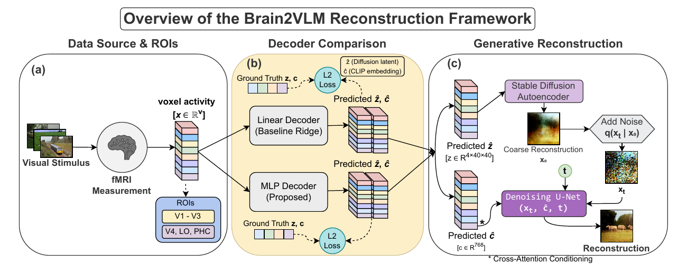
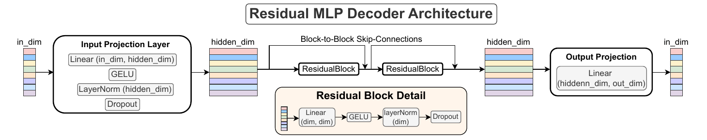
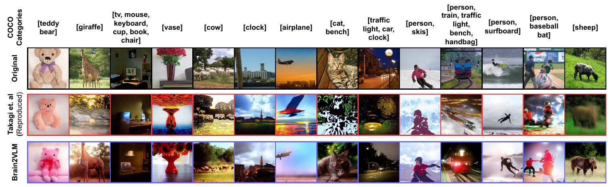
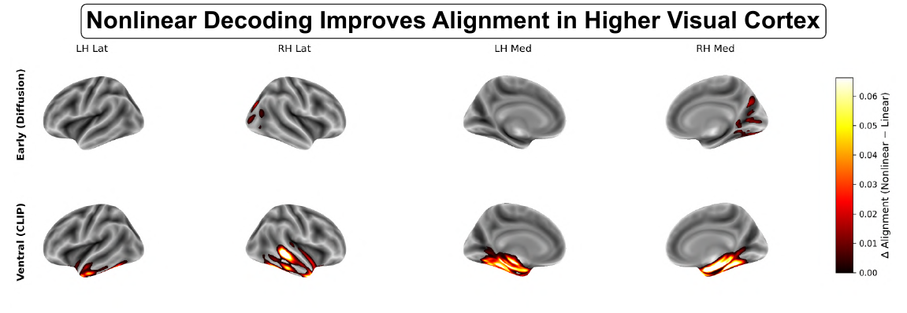
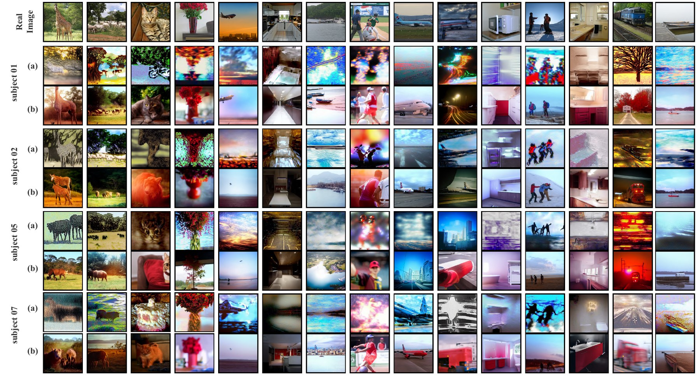

Hierarchical alignment between cortical representations and vision-language latent spaces
1Alliance School of Advanced Computing, Alliance University, India 2Department of Dentistry and Oral Health, Aarhus University, Denmark 3Department of Computer Science and Communication, Østfold University College, Norway
Brain-to-image systems keep getting heavier generators. We left the generator alone and asked what kind of map the brain-to-latent interface actually is.
A person lies in a 7 tesla scanner and looks at photographs. The scanner measures blood oxygenation across thousands of voxels of visual cortex. To turn that back into a picture, current methods learn a map from voxels into the latent space of a pretrained image generator, and let the generator do the drawing. Almost everyone uses ridge regression for that map, a single matrix, and spends their effort on the generator instead.
That assumes cortex relates to a generative model's latents the same way everywhere. We think it does not. Early visual cortex carries something close to a picture: edges, layout, contrast. Higher visual areas carry what the scene is: a giraffe, a kitchen, a person on a surfboard. Those two things live in different parts of a diffusion model too, one in the autoencoder latent, one in the CLIP conditioning vector.
If the brain is organised as a hierarchy, then the map out of it should not be one map. It should be near-linear at the bottom and clearly nonlinear at the top.
The panel below is that hypothesis with the measured numbers attached. Pick a region of visual cortex and see which part of the generator it feeds, and how much a nonlinear decoder buys you there.
Almost linear already.
Ridge regression gets most of the way to the diffusion latent. Adding depth and nonlinearity to the decoder helps a little, and then stops helping.
+0.06 correlation with the true latent, subj01.
Correlation between predicted and true latents on the 982 shared test images. The routing of early cortex to z and ventral cortex to c follows the region split used by Takagi and Nishimoto, so the only thing we change is the decoder.
The interface from cortex to latent space is near-linear for structure and strongly nonlinear for meaning. One decoder family for both is the wrong default.
No new generator, no extra conditioning, no fine-tuning. Changing the map alone beats much heavier pipelines on every semantic metric we report.
An expressive decoder drifts off the generator's own distribution. Semantics improve, texture does not. Accurate latents are necessary but not sufficient.
Five stages, from a photograph on a screen to a photograph rebuilt from blood flow. Only stage three is trained.
Each of the four participants viewed roughly 10,000 natural photographs from MS COCO over 30 to 40 scanning sessions. 982 images were shown to everyone, and those are held out for testing.

An input projection to 2048 units, then N residual blocks of linear, GELU, LayerNorm and dropout, then a linear output projection. Mean squared error against the true latent. The same hyperparameters are used for all four subjects. The point was never a clever architecture; it was to have enough expressivity to expose the difference between the two streams.

Fourteen held-out photographs from subj01. Drag the divider to swap between the linear baseline and our decoder on the same brain data.
Objects in this photo: giraffe
Both reconstructions come from the same fMRI recording and the same frozen Stable Diffusion. The only difference is how the voxels were mapped into z and c.
Object identity is recovered far more often. Texture and fine detail are not.

Depth, width and training data, measured separately for the structural latent and the semantic one. The two targets behave nothing alike.
Depth saturates after about two blocks and width after 2048 units, but accuracy is still climbing with the amount of training data at the point where NSD runs out. Decoding is still data-limited, which is a more useful thing to know than another point of correlation.
| Target | Ablation | Best value | Mean correlation | Std | Gain over ridge |
|---|---|---|---|---|---|
| diffusion z | depth | 0 blocks | 0.2959 | 0.0036 | +0.0569 |
| diffusion z | width | 512 | 0.3002 | 0.0037 | +0.0612 |
| diffusion z | data fraction | 1.0 | 0.2843 | 0.0027 | +0.0453 |
| CLIP c | depth | 6 blocks | 0.7819 | 0.0008 | +0.4779 |
| CLIP c | width | 2048 | 0.7761 | 0.0012 | +0.4721 |
| CLIP c | data fraction | 1.0 | 0.7761 | 0.0012 | +0.4721 |
Being close on average is not the same as living in the right neighbourhood. These are the 982 test predictions projected onto their first two principal components.
For CLIP, the linear predictions sit in their own cluster, well away from the true embeddings; the MLP predictions land on top of them. For the diffusion latent, all three clouds already overlap, and the MLP moves things slightly in the wrong direction. Maximum mean discrepancy says the same thing in one number.
| Comparison | Latent | MMD, lower is better |
|---|---|---|
| true z vs linear | diffusion z | 0.1213 ± 0.0018 |
| true z vs MLP | diffusion z | 0.1327 ± 0.0019 |
| true c vs linear | CLIP c | 0.3585 ± 0.0016 |
| true c vs MLP | CLIP c | 0.0424 ± 0.0004 |
| linear vs MLP | diffusion z | 0.0190 ± 0.0007 |
| linear vs MLP | CLIP c | 0.3892 ± 0.0004 |
A decoder can be more accurate and less compatible with the generator at the same time. That is the tension this work puts a number on.
Correlation with the true latent rewards getting the average right. The generator cares about something else: whether the vector you hand it looks like the vectors it was trained to condition on. For CLIP those two goals agree, and both improve. For the diffusion latent they come apart, which is the cleanest explanation we have for why semantic scores jump while texture does not.
Individual brains differ in signal quality and cortical layout. The direction of the effect does not.
BrainDiffuser adds a VDVAE initialiser and dual-guided diffusion. MindLDM adds masked autoencoder features, CLIP alignment, depth reconstruction and ControlNet guidance. Both keep a regression at the brain-to-latent interface. We changed only that interface.
| Metric | BrainDiffuser | MindLDM | Takagi et al. | Brain2VLM |
|---|---|---|---|---|
| Low-level fidelity | ||||
| PixCorr, higher better | 0.294 | 0.119 | — | 0.36 |
| SSIM, higher better | 0.406 | 0.328 | — | 0.31 |
| LPIPS, lower better | — | — | — | 0.69 |
| AlexNet(5) | 87% | 92% | 83% | 92% |
| CLIP(6) | — | — | — | 71% |
| DINOv2(6) | — | — | — | 69% |
| High-level semantics | ||||
| AlexNet | — | — | — | 92% |
| CLIP | 63% | 83% | 77% | 85% |
| DINO | — | — | — | 92% |
| Inception | 66% | 81% | 76% | 89% |
| Retrieval | ||||
| top-1 | — | — | — | 4% |
| top-10 | — | — | — | 23% |
Plotting the change in alignment, nonlinear minus linear, straight onto the cortical surface gives the hypothesis its most direct test. Early areas barely light up. The ventral stream lights up along its whole length.


Four participants from one dataset is a narrow base, and every decoder here is trained within a single subject. Cross-subject decoding and a second dataset are the obvious next tests.
The decoder never models the distribution it is predicting into, only the mean squared error to a target. A distribution-aware loss, or a diffusion prior over latents, would let us keep the accuracy without sliding off the generator's manifold. That is the experiment we most want to run next.
And a residual MLP is a blunt instrument for showing that a mapping is nonlinear. It shows the gap exists. A transformer or a multimodal decoder would say more about the shape of it.
One honest caveat about reading these reconstructions: a diffusion model always produces a plausible photograph, whether or not the brain supplied the evidence for it. Category-level metrics and the cortical maps are what carry the claim here, not any single pretty image.
@article{Pritam2026Brain2VLM,
author = {Pritam, N A Adarsh and O, Jeba Shiney and Jain, Sanyam},
title = {Brain2VLM: Hierarchical Alignment Between Cortical Representations
and Vision-Language Latent Spaces},
journal = {bioRxiv},
year = {2026},
doi = {10.64898/2026.04.23.720313},
elocation-id = {2026.04.23.720313},
publisher = {Cold Spring Harbor Laboratory},
url = {https://www.biorxiv.org/content/early/2026/04/23/2026.04.23.720313}
}